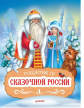

Путешествие по Сказочной России. Путеводитель для всей семьи

Дед Мороз представит и расскажет, где и как живут его друзья: Матушка Зима, Девица Метелица, Паккайне, Талви Укко, Тол Бабай, Кыш Бабай, Ямал Ири, Сагаан Убгэн, Байкальский Дед Мороз! Книга создана при поддержке туристического объединения "Сказочная Россия" и Дома Деда Мороза в г. Великий Устюг. Для детей дошкольного и младшего школьного возраста.